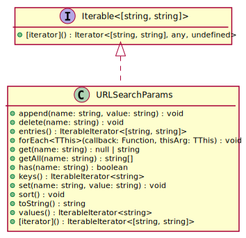

Hierarchy-Diagram
{kind=link}
Legend
 class
class
 interface
interface
 public method
public method
Hierarchy
- URLSearchParams
Implements
- Iterable<[string, string]>
Index
Constructors
constructor
Parameters
Optional init: string | readonly [string, string][] | URLSearchParams | Record<string, string | readonly string[]> | Iterable<[string, string]>
Returns URLSearchParams
Methods
[iterator]
Returns IterableIterator<[string, string]>
append
Append a new name-value pair to the query string.
Parameters
name: string
value: string
Returns void
delete
Remove all name-value pairs whose name is
name.Parameters
name: string
Returns void
entries
Returns an ES6
Iteratorover each of the name-value pairs in the query. Each item of the iterator is a JavaScriptArray. The first item of theArrayis thename, the second item of theArrayis thevalue.Alias for
urlSearchParams[@@iterator]().Returns IterableIterator<[string, string]>
for
Iterates over each name-value pair in the query and invokes the given function.
const myURL = new URL('https://example.org/?a=b&c=d');
myURL.searchParams.forEach((value, name, searchParams) => {
console.log(name, value, myURL.searchParams === searchParams);
});
// Prints:
// a b true
// c d trueType parameters
TThis = URLSearchParams
Parameters
callback: (value: string, name: string, searchParams: URLSearchParams) => void
Parameters
value: string
name: string
searchParams: URLSearchParams
Returns void
Optional thisArg: TThis
To be used as
thisvalue for whenfnis called
Returns void
get
Returns the value of the first name-value pair whose name is
name. If there are no such pairs,nullis returned.Parameters
name: string
Returns null | string
or
nullif there is no name-value pair with the givenname.
get
Returns the values of all name-value pairs whose name is
name. If there are no such pairs, an empty array is returned.Parameters
name: string
Returns string[]
has
Returns
trueif there is at least one name-value pair whose name isname.Parameters
name: string
Returns boolean
keys
Returns an ES6
Iteratorover the names of each name-value pair.const params = new URLSearchParams('foo=bar&foo=baz');
for (const name of params.keys()) {
console.log(name);
}
// Prints:
// foo
// fooReturns IterableIterator<string>
set
Sets the value in the
URLSearchParamsobject associated withnametovalue. If there are any pre-existing name-value pairs whose names arename, set the first such pair's value tovalueand remove all others. If not, append the name-value pair to the query string.const params = new URLSearchParams();
params.append('foo', 'bar');
params.append('foo', 'baz');
params.append('abc', 'def');
console.log(params.toString());
// Prints foo=bar&foo=baz&abc=def
params.set('foo', 'def');
params.set('xyz', 'opq');
console.log(params.toString());
// Prints foo=def&abc=def&xyz=opqParameters
name: string
value: string
Returns void
sort
Sort all existing name-value pairs in-place by their names. Sorting is done with a stable sorting algorithm, so relative order between name-value pairs with the same name is preserved.
This method can be used, in particular, to increase cache hits.
const params = new URLSearchParams('query[]=abc&type=search&query[]=123');
params.sort();
console.log(params.toString());
// Prints query%5B%5D=abc&query%5B%5D=123&type=searchReturns void
to
Returns the search parameters serialized as a string, with characters percent-encoded where necessary.
Returns string
values
Returns an ES6
Iteratorover the values of each name-value pair.Returns IterableIterator<string>
The
URLSearchParamsAPI provides read and write access to the query of aURL. TheURLSearchParamsclass can also be used standalone with one of the four following constructors. TheURLSearchParamsclass is also available on the global object.The WHATWG
URLSearchParamsinterface and thequerystringmodule have similar purpose, but the purpose of thequerystringmodule is more general, as it allows the customization of delimiter characters (&and=). On the other hand, this API is designed purely for URL query strings.v7.5.0, v6.13.0